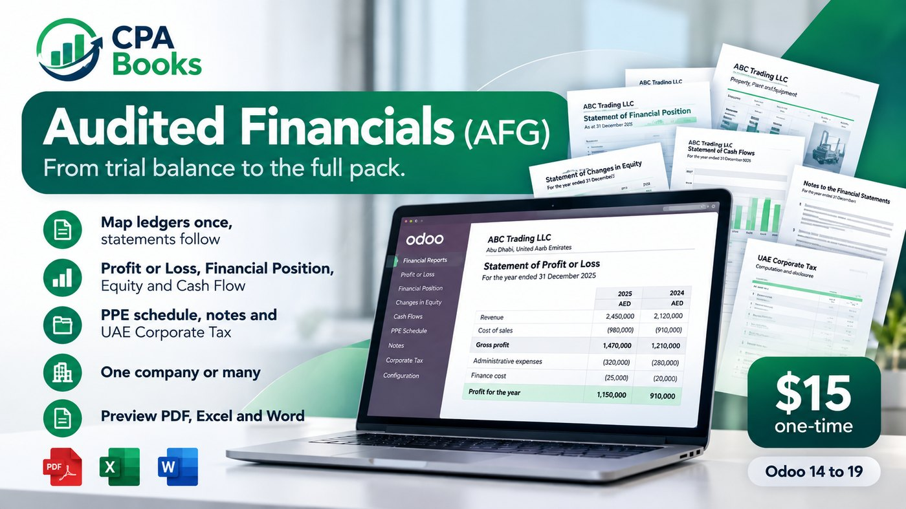
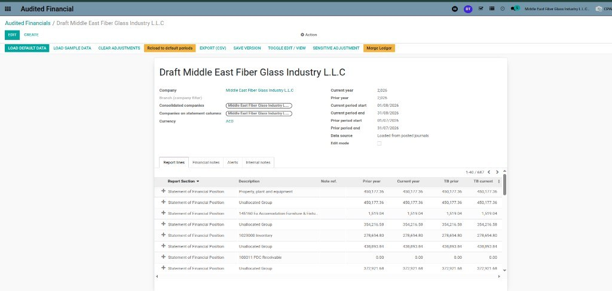
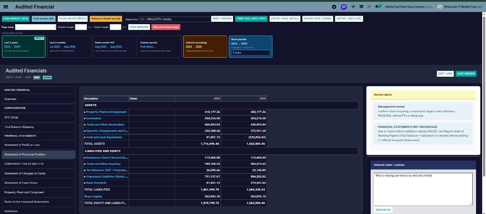
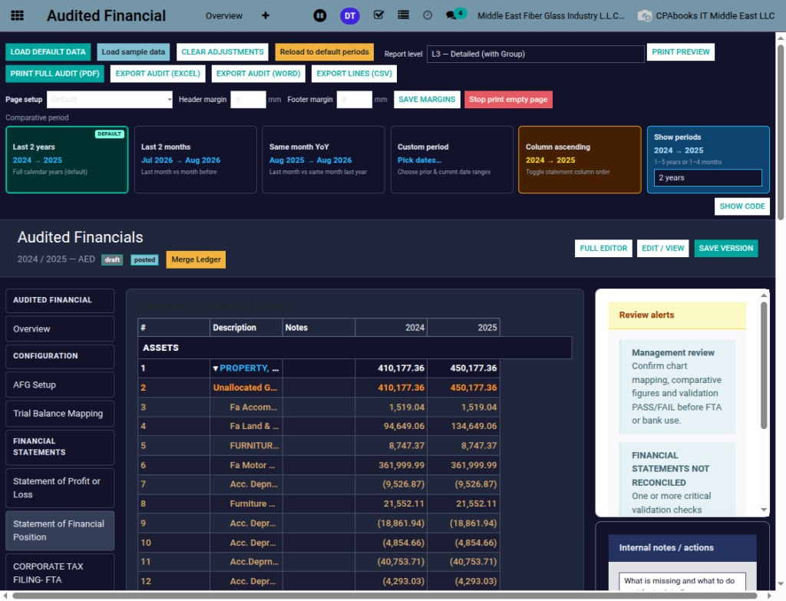

Generate your complete year-end financial statement pack directly from your live Odoo ledgers — without rebuilding balances in Excel or Word.

Audited Financials (AFG) turns the accounting data already maintained inside Odoo into a structured financial statement pack.
No separate spreadsheet workflow. No repeated copying of trial balance figures. No parallel “shadow” books. Your accounting records and financial statements stay connected inside one system.
A complete set of management financial statements and supporting schedules from your Odoo books.
Income statement ready for management review and presentation.
Assets, liabilities and equity structured for clear comparative review.
Track equity movements across reporting periods.
Operating, investing and financing cash movements in one view.
PPE schedule aligned with your financial statement pack.
Supporting notes managed alongside the core statements.
Financial layout support useful for UAE Corporate Tax workflows.
Real product screenshots from the Audited Financials workspace.
Configure the company, reporting periods, comparative periods and financial statement data directly from one place.


Create professional financial statements with flexible reporting options, comparative periods and multiple levels of detail.
Map your Odoo chart of accounts into structured AFG financial statement groups.

Review financial statements, compare periods, identify mapping issues and finalize your reporting pack from one workspace.
AFG starts from your Odoo trial balance and posted journals. Map chart-of-account lines into AFG reporting groups and generate financial statements from the same accounting entries your team already uses.
AFG helps identify unmapped or unclassified accounts before the financial statements are finalized.
Organize ledger accounts into reporting groups.
Quickly identify accounts requiring review.
Review important reporting issues before publishing.
Keep internal review notes and actions inside the workflow.
Odoo → Trial Balance → Copy to Excel → Adjust Formulas → Format Reports → Move to Word → Create PDF
Odoo Books → AFG → Professional Financial Pack
Outputs: PDF · Excel · Word
Export the same financial pack in the formats your team and stakeholders need.
Professional presentation and sharing
Analysis and working files
Editable document format
CSV export available for report lines.
Generate statements for an individual company.
Work with consolidated company reporting.
Full-year financial statements.
Monthly reporting and management review.
Select your own reporting dates.
Compare current and prior periods.
No manual TB → Excel → Word process.
Figures are based on posted Odoo journals.
Structured reports ready for management and business use.
Includes financial reporting structure useful for UAE Corporate Tax workflows.
Accounting and financial statements remain connected.
Mapping, alerts and validation help users review reports before publishing.
AFG prepares financial statements using the accounting records maintained in Odoo. The generated financial statements are management-prepared financial statements and do not constitute an independent external audit or an auditor’s opinion. Where a statutory audit is required, the formal audit report must be issued by the appointed external auditor.
No. AFG works with the accounting data already maintained inside Odoo.
No. AFG uses your Odoo trial balance and posted journal data.
Yes. AFG supports comparative financial reporting including current and prior periods.
Yes. Reports can be exported to PDF, Excel and Word, with CSV available for report lines.
Yes. AFG supports individual and multi-company reporting workflows.
No. AFG produces management-prepared financial statements. An independent auditor must issue any required statutory audit opinion.
Generate, review and export your complete financial reporting pack without rebuilding your accounts in spreadsheets.
Contact CPA Books · support@cpabooks.co